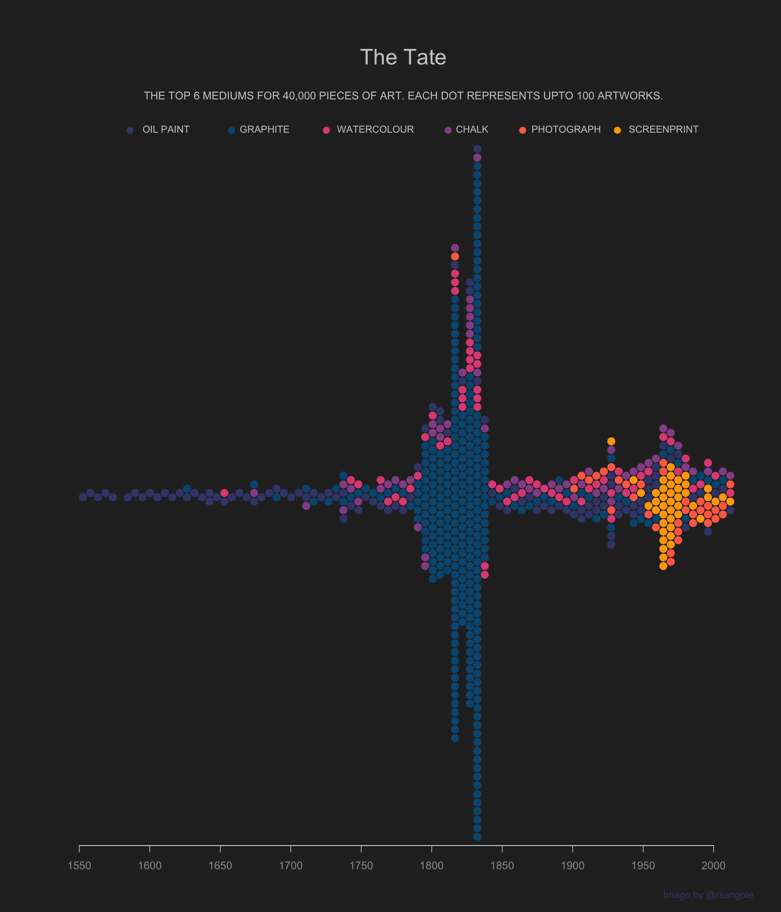

Last week's #TidyTuesday. Had something very specific in mind & it forced me to learn a new pkg and some base R to finish this plot.
— Rahul (@rsangole) January 20, 2021
I wanted to showcase the change in the dominant medium from Graphite to Screenprint, which we can see in this beeswarm plot.#rstats pic.twitter.com/6uMCLHag4P
TidyTuesday - The Tate Collection
TidyTuesday
Visualization
library(tidyverse)
library(tidyr)
library(data.table)
library(beeswarm)
library(extrafont)
# extrafont::font_import(paths = ".", prompt = F)
artists <- data.table::fread("artists.csv") %>%
mutate(gender = ifelse(is.na(gender), "Unknown", gender),
gender = factor(gender,levels = c("Male","Female", "Unknown"), ordered = TRUE),
life_yr = yearOfDeath - yearOfBirth,
pre_1850 = yearOfBirth < 1850,
name_len = stringr::str_length(name) - 2) %>%
separate(col = "placeOfBirth", sep = ",", into = c("birth_city", "birth_country"), remove = F) %>%
separate(col = "placeOfDeath", sep = ",", into = c("death_city", "death_country"), remove = F) %>%
mutate(moved_countries = birth_country != death_country,
birth_country = ifelse(is.na(birth_country), "Unknown", birth_country),
death_country = ifelse(is.na(death_country), "Unknown", death_country))
artwork <-
data.table::fread("artwork.csv") %>%
mutate(
artistRole = as.factor(artistRole),
medium = as.factor(medium),
units = as.factor(units),
area = width * height,
title_len = stringr::str_length(title)
) %>%
left_join(
y = artists %>% select(name, gender, yearOfBirth, birth_city, birth_country, life_yr),
by = c("artist" = "name")
)
color_pallete <- c("#005780",
"#3e487a",
"#955196",
"#dd5182",
"#ff6e54",
"#ffa600")
artwork[,
medium_cleaned := case_when(
grepl(pattern = "Graphite", x = medium) ~ "Graphite",
grepl(pattern = "Oil paint", x = medium) ~ "Oil Paint",
grepl(pattern = "Screenprint", x = medium) ~ "Screenprint",
grepl(pattern = "Watercolour", x = medium) ~ "Watercolour",
grepl(pattern = "photograph|Photograph", x = medium) ~ "Photograph",
grepl(pattern = "chalk|Chalk", x = medium) ~ "Chalk"
)]
artwork[,
color := case_when(
medium_cleaned %like% "Graphite" ~ color_pallete[1],
medium_cleaned %like% "Paint" ~ color_pallete[2],
medium_cleaned %like% "Screenprint" ~ color_pallete[6],
medium_cleaned %like% "Watercolour" ~ color_pallete[4],
medium_cleaned %like% "Photograph" ~ color_pallete[5],
medium_cleaned %like% "Chalk" ~ color_pallete[3]
)]
medium_dat_2 <- artwork[, .(year, medium_cleaned, color)]
bees_plot <- medium_dat_2 %>%
filter(!is.na(medium_cleaned), !is.na(year)) %>%
arrange(year)
bees_plot[, cutpts_numeric := cut(year, breaks = seq(1500, 2015, 5), labels = F)]
bees_plot[, cutpts := cut(year, breaks = seq(1500, 2015, 5))]
bees_plot[, xaxis := as.numeric(substr(cutpts, 2, 5))]
bees_plot_reduced <-
bees_plot[, .N, .(xaxis, medium_cleaned, color, cutpts_numeric)]
bees_plot_reduced[, num_pts := ceiling(N / 100)]
datlist <- list()
for (i in 1:nrow(bees_plot_reduced)) {
.nrows = bees_plot_reduced[i, num_pts]
.dlist <- list()
for (j in 1:.nrows) {
.dlist[[j]] <-
bees_plot_reduced[i, .(xaxis, medium_cleaned, color, cutpts_numeric)]
}
datlist[[i]] <- rbindlist(.dlist)
}
to_plot <- rbindlist(datlist)
glimpse(to_plot)Rows: 624
Columns: 4
$ xaxis <dbl> 1540, 1555, 1560, 1565, 1570, 1575, 1585, 1590, 1595, 1…
$ medium_cleaned <chr> "Oil Paint", "Oil Paint", "Oil Paint", "Oil Paint", "Oi…
$ color <chr> "#3e487a", "#3e487a", "#3e487a", "#3e487a", "#3e487a", …
$ cutpts_numeric <int> 9, 12, 13, 14, 15, 16, 18, 19, 20, 21, 22, 23, 24, 25, …make_plot <- function(to_plot) {
categories <- unique(to_plot[, .(medium_cleaned, color)])
xleg <- c(1.0, 2.8, 4.6, 6.8, 8.2, 10.0)
beeswarm(
xleg,
pwcol = categories$color,
horizontal = TRUE,
method = "center",
cex = 1.3,
pch = 19,
xlim = c(0, 12),
axes = FALSE
)
text(
x = xleg + 0.05,
y = 1,
labels = toupper(categories$medium_cleaned),
col = "gray80",
pos = 4,
cex = 0.9
)
}
make_plot_2 <- function(to_plot) {
beeswarm(
x = to_plot$xaxis,
pwcol = to_plot$color,
horizontal = TRUE,
method = "hex",
spacing = 1.1,
cex = 1.5,
pch = 19,
xlim = c(1550, 2010),
axes = FALSE
)
x <- seq(from = 1550, to = 2000, by = 50)
axis(
side = 1,
labels = x,
at = x,
col = "white",
col.ticks = "gray80",
col.axis = "gray60"
)
}
par(
fig = c(0, 1, 0.7, 1),
new = TRUE,
bg = "#292929"
# family = "Monoid"
)
make_plot(to_plot = to_plot)
par(fig = c(0, 1, 0, 0.9), new = TRUE)
make_plot_2(to_plot = to_plot)
mtext(
text = "The Tate",
side = 3,
cex = 2,
col = "gray80",
padj = -5
)
mtext(
text = "THE TOP 6 MEDIUMS FOR 40,000 PIECES OF ART. EACH DOT REPRESENTS UPTO 100 ARTWORKS.",
side = 3,
cex = 1,
col = "gray80",
padj = -5.5
)
mtext(
text = "Image by @rsangole",
side = 1,
cex = 0.9,
col = "#3e487a",
padj = 6,
adj = 1
)